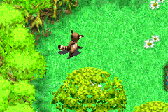

Over the Hedge (USA)
EEPROM 4K
Cartridge Identity
- Game Code
BH5E(FamilyBH5)- Header Title
OVER THE HED- Maker / Revision
52/ rev0- ROM Size
- 8.0 MiB (8,388,608 B)
- Save Media
EEPROM 4K- SHA-256
66056b4cdd8dd49c188362e3482c6d2ec650f9a6fdf529df06772fb31349ac9f- Engine / SDK Group
comm-005(81 families)
Screenshots

ROM Assets, Compression & Audio
- BIOS Compression
- LZ77 (
0x10): 5 streams · RLE (0x30): 4 streams - ROM Pointer Tables
- 20 tables (0 pointing to validated compressed streams)
- SDK Backup Tags
EEPROM_V124
Hardware MMIO Subsystems
ppu_display0x8005f54,0x8029bf0
Regional Variants & Revisions (Family BH5)
- Ab durch die Hecke (Germany) (
BH5D, 8 MiB) - Gang del Bosco, La (Italy) (
BH5I, 8 MiB) - Nos Voisins, les Hommes (France) (
BH5F, 8 MiB) - Over the Hedge (Europe) (
BH5P, 8 MiB) - Over the Hedge - Beesten bij de Buren (Netherlands) (
BH5H, 8 MiB) - Vecinos Invasores (Spain) (
BH5S, 8 MiB)